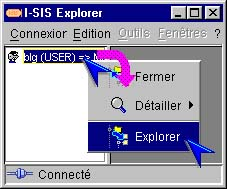
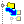
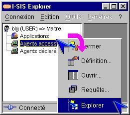
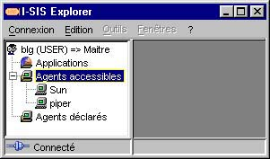

I-SIS Explorer

Guide d'utilisation
|
|
I-SIS Explorer |
|
|
Guide d'utilisation |
||
Le premier rôle de I-SIS Explorer est d'explorer une production informatique, modélisée par les tables I-TOOLS. L'exploration navigue d'un nœud table vers ses nœuds lignes, puis de chaque nœud ligne vers d'autres nœuds tables. L'accès à certains nœuds requiert une authentification avec une ouverture de session, qui ajoute un nœud instance en aval du nœud ligne accédé.
Ce chapitre présente les méthodes de base, accessibles à tout utilisateur et nécessaires pour explorer le système d'information des services. Ce système d'information est représenté par une arborescence dans le volet d'exploration à gauche de I-SIS Explorer.
La méthode d'exploration est disponible sur tout nœud, susceptible d'avoir des nœuds fils sans authentification préalable. Son exécution construit une branche descendante dans l'arborescence avec ses nœuds fils, s'ils existent.
Pointez un nœud ligne (le nœud représentant l'accès au I-SIS Portail dans l'exemple ci-dessous),
Cliquez avec le bouton droit de la souris pour afficher son menu contextuel,

Cliquez une méthode d'exploration (identifiable grâce à l'icône ) avec le bouton gauche de la souris,
L'arbre se déploie sur des nœuds tables, qui peuvent être explorés à leur tour,
Pointez un des nœuds tables nouvellement ajoutés,

Cliquez avec le bouton droit de la souris pour afficher son menu contextuel,
Cliquez une méthode d'exploration avec le bouton gauche de la souris,
L'arbre se déploie sur des nœuds lignes, objets de la table explorée.

| i |
Information : Un nœud ayant été exploré ne peut pas être ré-exploré via la même méthode. Celui-ci doit avoir été fermé au préalable (cf. «Fermer un nœud»). A contrario, il n'est pas nécessaire de fermer un nœud pour l'explorer via une autre méthode. |
Copyright © 2003 BV Associates. Tous droits réservés.